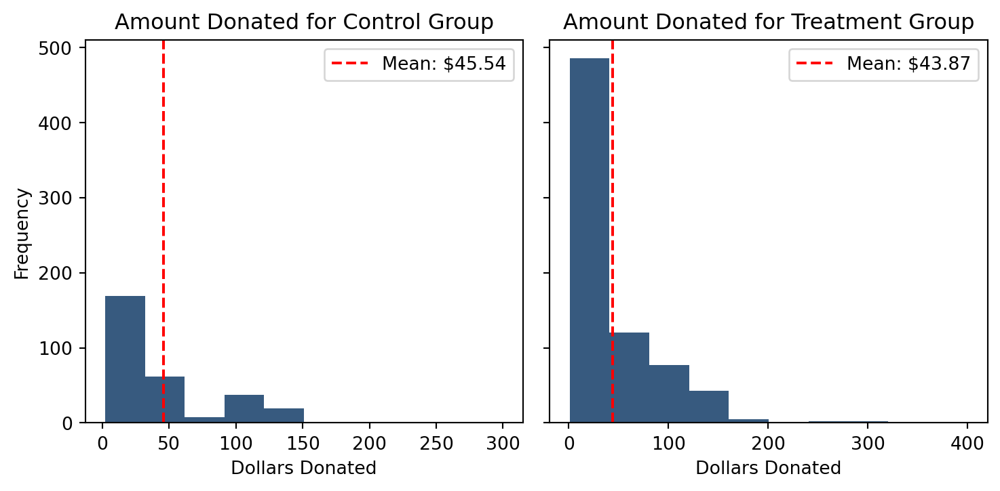

Dean Karlan at Yale and John List at the University of Chicago conducted a field experiment to test the effectiveness of different fundraising letters. They sent out 50,000 fundraising letters to potential donors, randomly assigning each letter to either be a treatment letter with a matching donation offer or a control letter with no mention of matching donation. They published the results of this experiment in the American Economic Review in 2007. The article and supporting data are available from the AEA website and from Innovations for Poverty Action as part of Harvard’s Dataverse.
The treatment group was further divided into various matching offer rates, either 1:1, 2:1, or 3:1 dollars matched to dollars donated. Of note, the organization donations were solicited for was a liberal nonprofit organization, and all potential donors mailed were previous donors to this organization. The experiment concluded that the presence of matching donation offers led to increased response rates and increased donation amounts, but no statistically significant increase was observed from higher match ratios.
This project seeks to replicate their results.
Data
Description
Variable Definitions
Variable
Description
treatment
Treatment
control
Control
ratio
Match ratio
ratio2
2:1 match ratio
ratio3
3:1 match ratio
size
Match threshold
size25
$25,000 match threshold
size50
$50,000 match threshold
size100
$100,000 match threshold
sizeno
Unstated match threshold
ask
Suggested donation amount
askd1
Suggested donation was highest previous contribution
askd2
Suggested donation was 1.25 x highest previous contribution
askd3
Suggested donation was 1.50 x highest previous contribution
ask1
Highest previous contribution (for suggestion)
ask2
1.25 x highest previous contribution (for suggestion)
ask3
1.50 x highest previous contribution (for suggestion)
amount
Dollars given
gave
Gave anything
amountchange
Change in amount given
hpa
Highest previous contribution
ltmedmra
Small prior donor: last gift was less than median $35
freq
Number of prior donations
years
Number of years since initial donation
year5
At least 5 years since initial donation
mrm2
Number of months since last donation
dormant
Already donated in 2005
female
Female
couple
Couple
state50one
State tag: 1 for one observation of each of 50 states; 0 otherwise
nonlit
Nonlitigation
cases
Court cases from state in 2004-5 in which organization was involved
statecnt
Percent of sample from state
stateresponse
Proportion of sample from the state who gave
stateresponset
Proportion of treated sample from the state who gave
stateresponsec
Proportion of control sample from the state who gave
As an ad hoc test of the randomization mechanism, I provide a series of tests that compare aspects of the treatment and control groups to assess whether they are statistically significantly different from one another.
test_variables = ['hpa', 'freq', 'years', 'median_hhincome']for var in test_variables: control = df.loc[df.treatment ==0, var].dropna() treatment = df.loc[df.treatment ==1, var].dropna() t_stat_manual = np.divide( (control.mean() - treatment.mean()), np.sqrt( (treatment.var(ddof=1) /len(treatment)) + (control.var(ddof=1) /len(control)) ) ) pval_manual =2* (1- t.cdf(np.abs(t_stat_manual), df=len(control) +len(treatment) -2)) t_stat, pval = ttest_ind(control, treatment)print(f'''T-test Results for {var}:Control mean: {control.mean()}Treatment mean: {treatment.mean()}t-statistic (manual): {t_stat_manual}t-statistic (scipy): {t_stat}p-value (manual): {pval_manual}p-value (scipy): {pval}''') m = rsm.model.regress(data=df, rvar=var, evar=['treatment'], )print(f'Linear Regression Results for {var}:')print(m.summary(main=False))print(f'''At the 95% confidence level, we {pval <0.05and"reject"or"fail to reject"} the null hypothesis that the mean value from the two samples are equal.---------------------------------------------------''')
T-test Results for hpa:
Control mean: 58.960166931152344
Treatment mean: 59.59724044799805
t-statistic (manual): -0.9703896722043864
t-statistic (scipy): -0.944145044786662
p-value (manual): 0.33185698112371353
p-value (scipy): 0.34510008823759086
Linear Regression Results for hpa:
R-squared: 0.0, Adjusted R-squared: -0.0
F-statistic: 0.891 df(1, 50081), p.value 0.345
Nr obs: 50,083
None
At the 95% confidence level, we fail to reject the null hypothesis
that the mean value from the two samples are equal.
---------------------------------------------------
T-test Results for freq:
Control mean: 8.047342242464193
Treatment mean: 8.035363516588813
t-statistic (manual): 0.11084502380904246
t-statistic (scipy): 0.11089297035979982
p-value (manual): 0.9117396856546793
p-value (scipy): 0.9117016644344591
Linear Regression Results for freq:
R-squared: 0.0, Adjusted R-squared: -0.0
F-statistic: 0.012 df(1, 50081), p.value 0.912
Nr obs: 50,083
None
At the 95% confidence level, we fail to reject the null hypothesis
that the mean value from the two samples are equal.
---------------------------------------------------
T-test Results for years:
Control mean: 6.1359141846946725
Treatment mean: 6.078365024704297
t-statistic (manual): 1.0909175279573782
t-statistic (scipy): 1.103038374578911
p-value (manual): 0.2753144222756161
p-value (scipy): 0.27001580108724454
Linear Regression Results for years:
R-squared: 0.0, Adjusted R-squared: 0.0
F-statistic: 1.217 df(1, 50080), p.value 0.27
Nr obs: 50,082
None
At the 95% confidence level, we fail to reject the null hypothesis
that the mean value from the two samples are equal.
---------------------------------------------------
T-test Results for median_hhincome:
Control mean: 54921.09447493141
Treatment mean: 54763.168992633575
t-statistic (manual): 0.7432960510660361
t-statistic (scipy): 0.741683012117828
p-value (manual): 0.4573060841853336
p-value (scipy): 0.458283028000566
Linear Regression Results for median_hhincome:
R-squared: 0.0, Adjusted R-squared: -0.0
F-statistic: 0.55 df(1, 48207), p.value 0.458
Nr obs: 48,209
None
At the 95% confidence level, we fail to reject the null hypothesis
that the mean value from the two samples are equal.
---------------------------------------------------
Confirmed through manual t-test calculation, t-tests performed with scipy, and with linear regression models, none of the assessed variables are statistically significantly different between the control and treatment groups.
Experimental Results
Charitable Contribution Made
First, I analyze whether matched donations lead to an increased response rate of making a donation.
gave_df = df.groupby('treatment')['gave'].mean()gave_df.index = gave_df.index.map({0: 'Control', 1: 'Treatment'})plt.bar(gave_df.index, gave_df.values)plt.title('Proportion Who Donated by Group')plt.xlabel('Group')plt.ylabel('Proportion Who Donated')for i, v inenumerate(gave_df.values): plt.text(i, v-0.001, f"{v:.3f}", ha='center', color='white')plt.show()
control = df.loc[df.treatment ==0, 'gave'].dropna()treatment = df.loc[df.treatment ==1, 'gave'].dropna()t_stat, pval = ttest_ind(control, treatment)print(f'''T-test Results: Control mean: {control.mean()}Treatment mean: {treatment.mean()}t-statistic: {t_stat}p-value: {pval}''')probit_model = smf.probit('gave ~ treatment', data=df).fit(disp=False)print(f'''Probit Regression Results:t-statistic: {probit_model.tvalues['treatment']}p-value: {probit_model.pvalues['treatment']}At the 95% confidence level, we {pval <0.05and"reject"or"fail to reject"} the null hypothesis that the mean value from the two samples are equal.''')
T-test Results:
Control mean: 0.017858212980164198
Treatment mean: 0.02203856749311295
t-statistic: -3.101361000543946
p-value: 0.0019274025949016982
Probit Regression Results:
t-statistic: 3.1129300737950434
p-value: 0.0018523990147782177
At the 95% confidence level, we reject the null hypothesis
that the mean value from the two samples are equal.
From both the t-test and the probit regression model, we find a statistically significant difference between the response rates (average value for binary ‘gave’ variable) from the control and treatment samples at the 99% confidence level. From this, we can conclude that potential donors are more likely to respond to solicitation and donate when provided an offer of matching donation contributions.
Differences between Match Rates
Next, I assess the effectiveness of different sizes of matched donations on the response rate.
df['ratio'] = df['ratio'].astype(str)df['ratio'] = pd.Categorical( df['ratio'], categories=['Control', '1', '2', '3'], ordered=True)ratio_df = df.groupby('ratio', observed=False)['gave'].mean()ratios = ratio_df.index.values[1:]for i inrange(len((ratios))): r1 = ratios[i] r2 = ratios[i +1] if i +1<len(ratios) else ratios[0] group1 = df.loc[df.ratio == r1, 'gave'].dropna() group2 = df.loc[df.ratio == r2, 'gave'].dropna() t_stat, pval = ttest_ind(group1, group2)print(f'''Response rate for {r1}:1 {group1.mean()}Response rate for {r2}:1 {group2.mean()}t-statistic: {t_stat}p-value: {pval}At the 95% confidence level, we {pval <0.05and"reject"or"fail to reject"} the null hypothesis that the response rate of ratios {r1}:1 and {r2}:1 are equal.---------------------------------------------------''')
Response rate for 1:1 0.020749124225276205
Response rate for 2:1 0.0226333752469912
t-statistic: -0.96504713432247
p-value: 0.33453168549723933
At the 95% confidence level, we fail to reject the null hypothesis
that the response rate of ratios 1:1 and 2:1 are equal.
---------------------------------------------------
Response rate for 2:1 0.0226333752469912
Response rate for 3:1 0.022733399227244138
t-statistic: -0.05011583793874515
p-value: 0.9600305283739325
At the 95% confidence level, we fail to reject the null hypothesis
that the response rate of ratios 2:1 and 3:1 are equal.
---------------------------------------------------
Response rate for 3:1 0.022733399227244138
Response rate for 1:1 0.020749124225276205
t-statistic: 1.0150255853798622
p-value: 0.3101046637086672
At the 95% confidence level, we fail to reject the null hypothesis
that the response rate of ratios 3:1 and 1:1 are equal.
---------------------------------------------------
As seen through the above series of t-tests, comparing the mean response rates between varying match ratio samples, increasing match ratios above 1:1 has no significant impact on response rates. This affirms the conclusion made by the authors of the study.
Response Rate Regressed on Match Ratio (from full dataset):
The large negative coefficient on the intercept demonstrates the relatively low probability of response for the control group, where the positive coefficients combined with low p-values, particularly for 2:1 and 3:1 match rates, demonstrate the statistically significant increase that the treatment has on respones rates. To further asses the difference between match rates, I will run the regression again, excluding the control group.
Response Rate Regressed on Match Ratio (from treatment group only):
With the control group excluded, we can see from the high p-values on the coefficients for 2:1 and 3:1 match ratios that they do not have a significantly different impact on response rates from the intercept (1:1).
print(f'Observed difference between 3:1 response rate and 2:1 response rate: {ratio_df['3'] - ratio_df['2']}')print(f'Observed difference between 2:1 response rate and 1:1 response rate: {ratio_df['2'] - ratio_df['1']}')mfx = probit_model2.get_margeff()marginal_effects = mfx.margeffdiff_3_vs_2 = marginal_effects[2] - marginal_effects[1]diff_2_vs_1 = marginal_effects[1] - marginal_effects[0]print(f"Estimated difference between 3:1 response rate and 2:1 response rate: {diff_3_vs_2}")print(f"Estimated difference between 2:1 response rate and 1:1 response rate: {diff_2_vs_1}")
Observed difference between 3:1 response rate and 2:1 response rate: 0.00010002398025293902
Observed difference between 2:1 response rate and 1:1 response rate: 0.0018842510217149944
Estimated difference between 3:1 response rate and 2:1 response rate: 9.229335508974864e-05
Estimated difference between 2:1 response rate and 1:1 response rate: 0.0018064011975636126
The analysis continues to affirm the authors’ findings that beyond adding a matching donation of any size, increasing match ratios is not an effective method of driving higher response rates.
Size of Charitable Contribution
In this subsection, I analyze the effect of the size of matched donation on the size of the charitable contribution.
control = df.loc[df.treatment ==0, 'amount'].dropna()treatment = df.loc[df.treatment ==1, 'amount'].dropna()t_stat, pval = ttest_ind(control, treatment)print(f'''T-test Results:Control mean: ${control.mean():,.2f}Treatment mean: ${treatment.mean():,.2f}t-statistic: {t_stat}p-value: {pval}At the 95% confidence level, we {pval <0.05and"reject"or"fail to reject"} the null hypothesis that the mean donation amount of the two samples are equal.''')
T-test Results:
Control mean: $0.81
Treatment mean: $0.97
t-statistic: -1.8605020225753781
p-value: 0.06282038947470686
At the 95% confidence level, we fail to reject the null hypothesis
that the mean donation amount of the two samples are equal.
We can observe that the treatment group has a higher mean donation amount, as identified by the authors, but at the 95% confidence level, it is not statistically significant.
control = df.loc[(df.treatment ==0) & (df.gave ==1), 'amount'].dropna()treatment = df.loc[(df.treatment ==1) & (df.gave ==1), 'amount'].dropna()t_stat, pval = ttest_ind(control, treatment)print(f'''T-test Results:Control mean: ${control.mean():,.2f}Treatment mean: ${treatment.mean():,.2f}t-statistic: {t_stat}p-value: {pval}At the 95% confidence level, we {pval <0.05and"reject"or"fail to reject"} the null hypothesis that the donation amount of the two samples are equal.''')
T-test Results:
Control mean: $45.54
Treatment mean: $43.87
t-statistic: 0.5808388615237938
p-value: 0.5614758782284279
At the 95% confidence level, we fail to reject the null hypothesis
that the donation amount of the two samples are equal.
Assessing only those who made a donation, we in fact see that the mean donation amount among the treatment group is lower than the control group, though with a much higher p-value than the previous t-test. It appears that while the treatment results in higher response rates, most of those donors who are ‘converted’ by the treatment are making smaller donations than those who donated from the control group.
fig, axes = plt.subplots(1, 2, figsize=(7, 3.5), sharey=True)axes[0].set_ylabel("Frequency")for val in [0, 1]: subset = df.loc[(df.gave ==1) & (df.treatment == val)].copy() axes[val].hist(subset['amount'], bins=10) axes[val].axhline(y=subset['amount'].mean(), color='r', linestyle='--', label=f'Mean: ${subset["amount"].mean():,.2f}') axes[val].legend() axes[val].set_title(f'Amount Donated for {"Treatment"if val ==1else"Control"} Group') axes[val].set_xlabel("Dollars Donated")plt.tight_layout()plt.show()

Simulation Experiment
As a reminder of how the t-statistic “works,” in this section I use simulation to demonstrate the Law of Large Numbers and the Central Limit Theorem.
Suppose the true distribution of respondents who do not get a charitable donation match is Bernoulli with probability p=0.018 that a donation is made.
Further suppose that the true distribution of respondents who do get a charitable donation match of any size is Bernoulli with probability p=0.022 that a donation is made.
Law of Large Numbers
The below chart illustrates the cumulative average difference in response rates from 10,000 draws of simulated treatment and control distributions. In early simulations, we see this cumulative average move erratically due to random variation, but as more draws are simulated, the average begins to stabilize and converge toward the true observed treatment effect of approximately 0.004.
These histograms show the distribution of simulated average differences in response rates between treatment and control groups at sample sizes of 50, 200, 500, and 1000. As the sample size increases, the distributions become tighter and more symmetric, demonstrating the central limit theorem: larger samples yield more stable, normally distributed estimates.